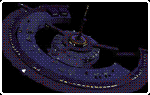

|
 |
 |  |
 |
||
 
|
||||||
| Mon 7.2. 20:15 DORKBOT.BLN - DOING _BASICALLY_ STRANGE THINGS WITH ELECTRICITY. |
||||||
| The dorks are back in town! C-BASICS presenting the 2nd dorkbot.bln meeting. Moderator: Jussi Ängeslevä, lecturer University of the Arts (UdK Berlin). Applications welcome at dorkbot@c-base.org |
||||||
 Mainhall  Jussi See more photos on: www.c-base.org /gal/Transmediale-05 |
Taeji Sawai (JP), born in 1978, lives in Berlin. Performances of body expressions, sounds, and light under the control of sensors. "I use sound and ultra Sonic Wave to make vibrations of eardrum. Audience can feel the strange motion of eardrum." "Another project is named aeo. Concept of that is we want to use sensors and sound physically." |
"Outerspace" - A project by Andre Stubbe and Markus Lerner, Berlin University of the Arts (UdK Berlin). It was developed on the theme Lustobjekt in the Digital Media Class of UdK Berlin. www.markuslerner.com /outerspace  Outerspace  |
Matthias Rang, Humboldt University Berlin:TESLA COIL Lecture & Experiment [From Wikipedia, the free encyclopedia] "A TESLA COIL is a high-voltage, air-core, self-regenerative resonant transformer that generates very high voltages at high frequency, named after its inventor Nikola Tesla (July 10, 1856 - January 7, 1943) He was a physicist, inventor, and electrical engineer of unusual intellectual brilliance and practical achievement. Tesla is most famous for conceiving the rotating magnetic field principle (1882) and then using it to invent the induction motor together with the accompanying alternating current long-distance electrical transmission system (1888). His theoretical work and patents still form the basis for modern alternating current electric power systems." Before starting the TESLA COIL experiment Matthias Rang will provide a short survey on Nicola Tesla's work and controversial reception amongst the scientific commmunity.  Tesla-Experiment  Photo: www.we-make-money-not-art.com |
Tonleiter-Performance, Christopher Bauder, ToneLadder.COMpany: "If a household ladder is extended with a melodic function, it will develop into a real musical instrument. The ordinary ladder transforms into a soundladder. Stepping on a bar of the ladder creates a sound or tone which is different from rung to rung. So you can create a piece of music by stepping up and down on the ladder." www.tonleiter.com  ToneLadder |
||
| www.dorkbot.org/international The theme nights will be supplemented by workshops, projections, screenings and sounds. c-base | rungestrasse 20 | s + u jannowitzbrücke |
||||||